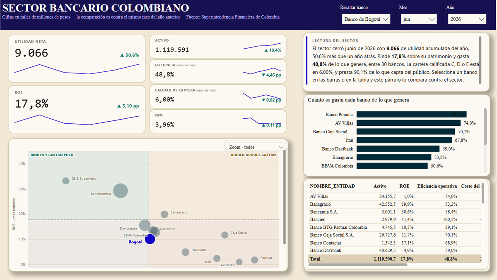
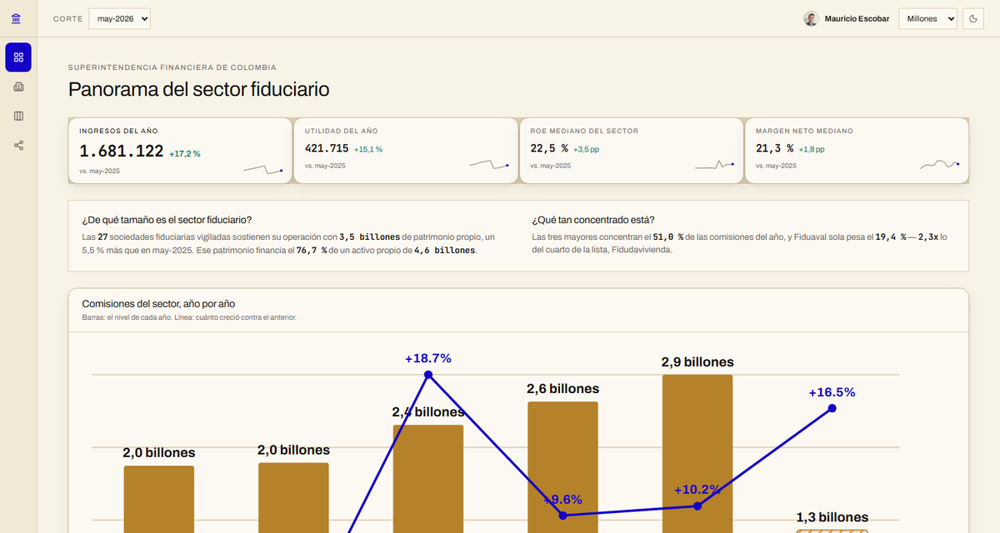
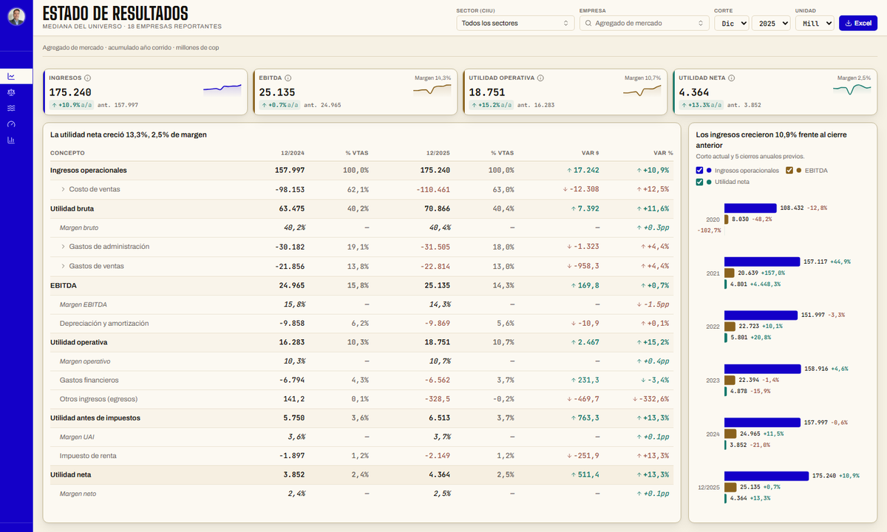
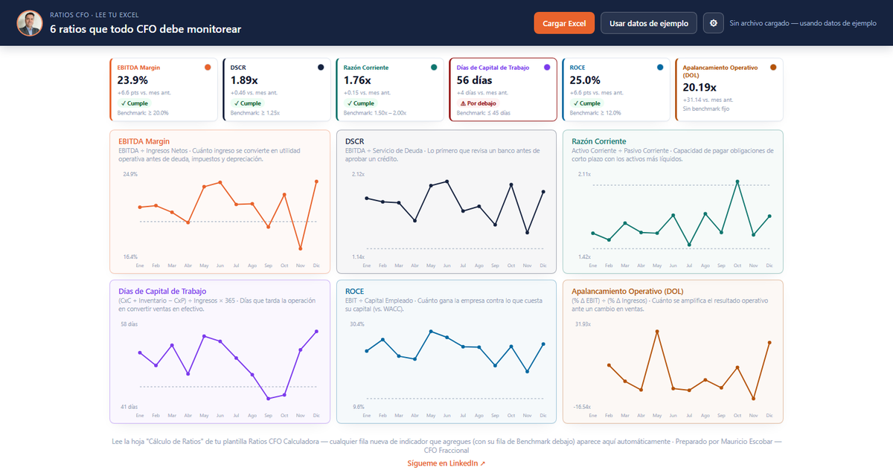
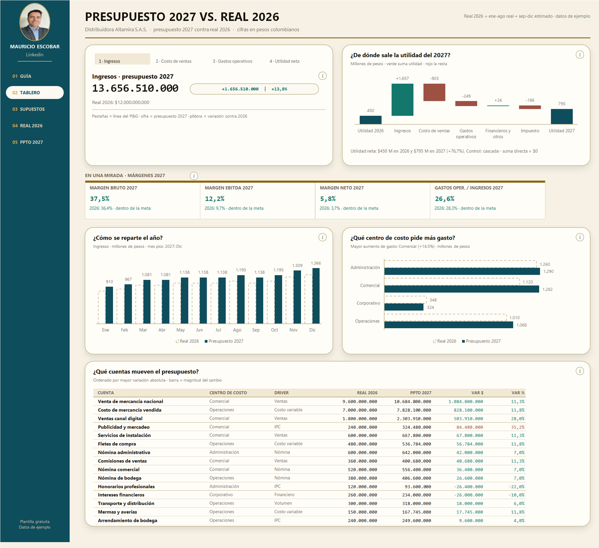
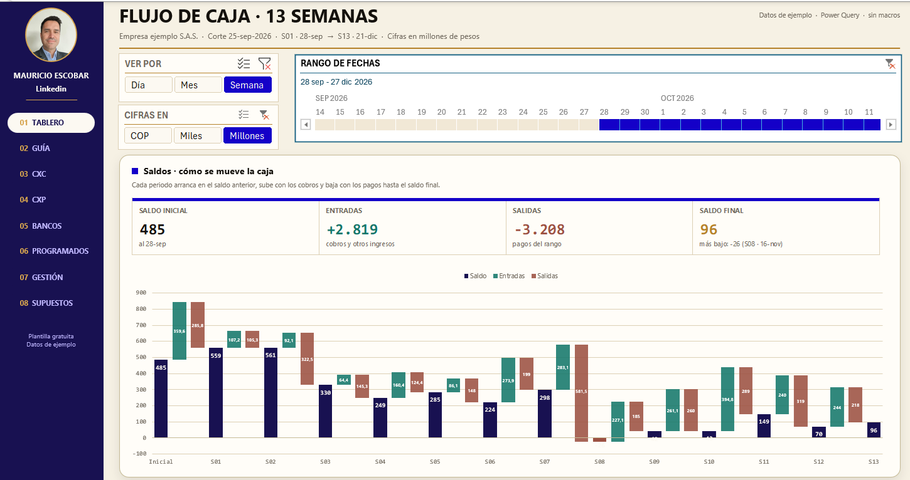
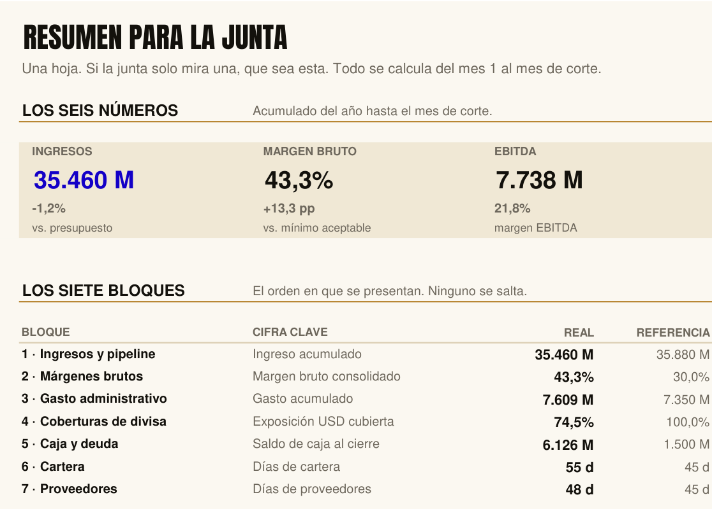
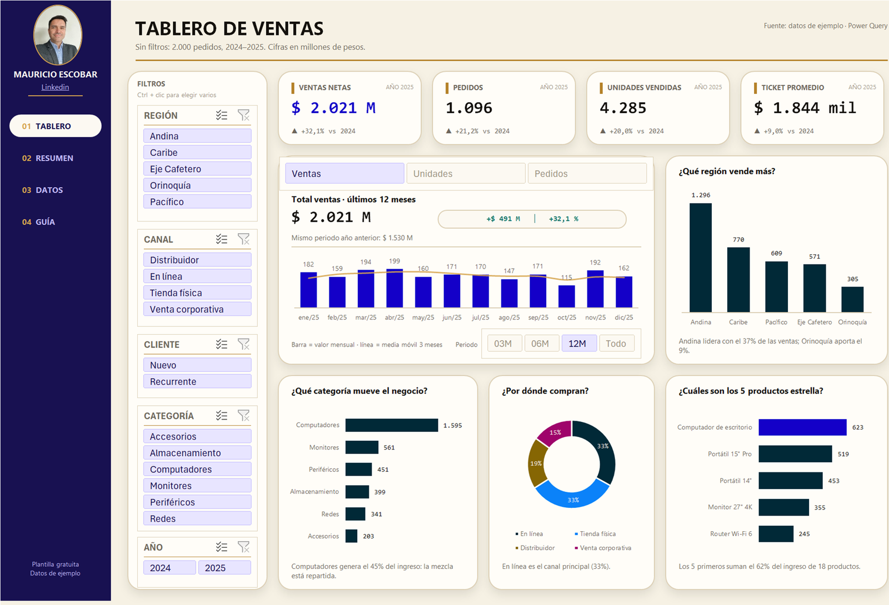

Perfil
20 años de finanzas corporativas
Dirijo finanzas corporativas con estándar de junta directiva: planeación, presupuesto, tesorería y riesgo. Pero el efecto que busco no se queda en finanzas: cuando la información está ordenada y llega a tiempo, comercial prioriza distinto, operaciones deja de improvisar, y la junta discute la decisión en vez de discutir la cifra.
Ese es el trabajo: estructurar la información, analizarla hasta que diga algo, y llevar el hallazgo a quien tiene que actuar — en el plano estratégico y en el táctico, que casi nunca se resuelven en la misma reunión. Business Intelligence, inteligencia artificial y Excel avanzado me dan velocidad; el análisis, el oficio corporativo y dirigir un equipo hacia un mismo estándar son los que hacen que el hallazgo llegue a tiempo y que alguien lo use.
20 años: un grupo financiero vigilado (Fiduciaria Bogotá, Grupo Aval), producción de cine para un estudio internacional (TIS Productions, Paramount) y ciberseguridad (Multisoft). Mi aporte no depende de la industria: construyo el camino que lleva el dato crudo hasta un tablero donde el problema se vuelve evidente, y me siento a decidir con él.
Trayectoria
De analista de crédito a vicepresidente
Jun 2026
Vicepresidente Financiero y Administrativo
Multisoft
Estrategia financiera y administrativa de la compañía en Colombia, América y España, con un equipo de diez personas y reporte directo a junta directiva. Implementé un sistema de gestión de riesgos con modelo de scoring crediticio y formulé el plan financiero del año siguiente sobre proyecciones de inteligencia de negocios. Diseñé el tablero de control del pipeline comercial por negocio, comercial y cliente, contra presupuesto.
Apalancado en mi gestión, la compañía cerró 2025 con ahorros frente al presupuesto aprobado. Tecnología y ciberseguridad.
Mar 2025
Director FP&A
TIS Productions (Paramount)
Planeación financiera regional de proyectos de producción fílmica en Colombia y México, con foco en EBITDA y márgenes operativos. Llevé el ciclo de análisis de quincenal a semanal con tableros en tiempo real, y gestioné el incentivo tributario CINA ante el Ministerio de Cultura.
Proyectos audiovisuales de hasta USD 50M de presupuesto, con el 100% cerrando dentro de lo asignado. Devolución cercana al 35% de gastos aplicables vía CINA.
Nov 2022
Gerente de Planeación Financiera y Estratégica
Fiduciaria Bogotá
Ocho años al frente del presupuesto corporativo, los KPI y OKR estratégicos y los ejercicios de planeación, reportando a colaboradores, directivos y junta. Creé y lideré el Comité de Eficiencia de la compañía.
COP 94.000M de presupuesto anual con ejecución del 96%. Consolidación financiera de 2 días a 1 hora. Ahorros por COP 4.000M. Modelo de rentabilidad por producto que sostuvo un ROE superior al 20%.
May 2014
Especialista de Planeación Financiera
Fiduciaria Bogotá
Construí los modelos que después serían la base del sistema de inteligencia de negocios de la compañía. Reportes presupuestales, de cuatro días a dos.
Dic 2007
Analista financiero
Siemens Ibérica
Análisis financiero y gestión de pedidos en SAP para una multinacional industrial, en paralelo al MBA en Madrid.
May 2006
Analista de crédito
Banco de Bogotá
El punto de partida: riesgo de clientes Pyme, empresariales y corporativos, con presentación al Comité de Riesgo. Aprendí a leer un balance desde afuera.
Lo que construyo
Tableros, modelos y descargables
Las cifras cuentan historias, pero sueltas suenan a ruido. Un estado financiero ya sabe quién sostiene la compañía, quién vive de los demás y en qué mes empezó a torcerse: lo dice desordenado y a destiempo, y por eso nadie lo oye. Mi oficio es ponerlas en orden hasta que se escuchen — cada dato en su entrada, la comparación en su compás, el hallazgo justo donde ya no se puede ignorar. Cuando eso pasa, la junta deja de discutir la cifra y se pone a decidir. Abajo están los instrumentos con los que armo esa partitura.
Utilidad del sector bancario colombiano
PúblicoUtilidad, rentabilidad, eficiencia y riesgo de los 30 bancos del país, con corte mensual. A junio de 2026 el sector ganó $9,1 billones, 50,6% más que un año atrás; el tablero muestra quién rinde, quién gasta de más y cómo se compara cada banco contra el sector.
Abrir el informe
Análisis del sector fiduciario
PúblicoLee los informes oficiales de la Superintendencia Financiera y convierte activos fideicomitidos, comisiones y resultados en comparables entre las 27 sociedades vigiladas. Datos del regulador, verificables por cualquiera.
Abrir el tablero
Análisis financiero de empresas
PúblicoEstados financieros públicos de empresas colombianas convertidos en indicadores comparables: rentabilidad, endeudamiento, liquidez y eficiencia, con la mediana del sector al lado de cada cifra.
Abrir el tablero
Los seis ratios que un CFO mira todos los meses
PúblicoMargen EBITDA, cobertura de deuda, razón corriente, días de capital de trabajo, ROCE y apalancamiento operativo, cada uno contra su referencia. Se carga un Excel propio y la calculadora dibuja los doce meses; sin archivo corre con datos de ejemplo.
Abrir la calculadora
Los cuatro modelos de abajo se muestran con cifras de ejemplo. La estructura y los criterios de cálculo son los reales; los números no corresponden a ninguna compañía.
Presupuesto 2027 contra real 2026
DescargableArma el presupuesto del año siguiente a partir de supuestos de volumen, precio, inflación y salarios, mes a mes y por centro de costo, y lo compara contra el real. El tablero responde de dónde sale la utilidad, qué centro de costo pide más gasto y qué cuentas mueven el resultado.
Recibir el modelo por correo
Flujo de caja proyectado a 13 semanas
DescargableProyección rodante semana a semana que muestra cuándo se abre un hueco de caja, no solo si se abre. Arranca en el saldo de bancos, suma cobros por cartera y resta pagos programados; el tablero se filtra por rango de fechas y unidad.
Descargar el modelo (Excel, 667 KB)
Board pack para junta directiva
DescargableLos seis números y los siete bloques que una junta revisa cada mes, en el orden en que se presentan. Todo se calcula del mes 1 al mes de corte, y un mes sin datos dice «sin datos», no un falso verde.
Descargar el modelo (Excel, 254 KB)
Tablero de ventas con Power Query
DescargableVentas por región, canal, categoría y producto con filtros conectados y comparación contra el año anterior. Los datos entran por Power Query: se pega la base nueva, se actualiza y el tablero se recalcula sin tocar fórmulas.
Descargar el tablero (Excel, 508 KB)
Modelo financiero para un café de barrio
PrivadoAsesoría voluntaria a un café de barrio que acaba de abrir su local: cuántas tazas al día necesita vender para sostenerse, flujo de caja a doce meses con la deuda incluida y tres escenarios de venta. El modelo le dice al dueño qué número mirar cada semana. Las cifras son del emprendedor y no se publican.
Chess Gym
PúblicoEntrenador de aperturas de ajedrez con motor de análisis y repetición espaciada. No tiene nada que ver con finanzas: está aquí porque demuestra que lo que construyo llega a funcionar de verdad, no a quedarse en prototipo.
Abrir Chess GymFormación
MBA, pregrado y especializaciones
MBA, Master en Administración de Empresas
Escuela de Negocios CESMA · Madrid, España
Administrador de Empresas
Universidad Militar Nueva Granada · Bogotá
Diplomado en Gerencia Estratégica
Cámara de Comercio de Bogotá
Diplomado en Gerencia Integral de Riesgo Crediticio SARO
Politécnico Grancolombiano · Bogotá
Diplomado en Gerencia de Comercio Internacional
Universidad Militar Nueva Granada · Bogotá
Herramientas
Áreas
Idiomas
Español nativo · Inglés avanzado
Construido con IA
Contacto
Tres formas de escribirme